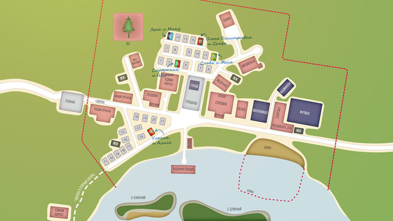

Батареи в Совенке
Страница 1 из 1 • Поделиться •

Батареи в Совенке
автор peregarrett в Вт 9 Сен 2014 - 20:31
Обсуждение из вики по поводу батарей в домах:
Если в лагерь бывают зимние заезды - отопление вполне может быть. От ближайшей котельной.
Ну мы как бы от картинок отталкиваемся. Так в домиках действительно отопления нет. Так что если батареи где и есть - то в каком-нибудь зимнем корпусе (=
Если вспомнить Winter Tale, то зимние заезды были, но це нелогично получается, коль не было отопления.
Буржуечки наверное...
Теоретически, может быть либо с четвертой стены рядом с дверью, либо справа-слева под кроватями. И на карте никаких зимних корпусов не обозначено, так что придется им как-то утеплять и отапливать эти домики.
В оригинальном лагере МИФИ есть зимние корпуса. В wintertale карты нет, и кто где живёт, тоже ни слова.
А верить в карту БЛ не есть разумно - всё-таки там даже бани нет! Непорядок же!
Братцы, такие домики с тонкими стенами в одну доску отапливать бесполезно в принципе! И никаких батарей там быть не может. В лучшем случае они есть в капитальном корпусе (если таковой имеется). Но в том, что в лагере за 300км от ближайшего райцентра (читай, посёлок городского типа) есть кап. корпус и хоть какая-то котельная... Ерунда.
ЗЫ а не до хрена ли 300км до райцентра? Это что - какой-нибудь Красноярский Край? В европейской части Союза расстояния между двумя райцентрами в прееделах 100км
Ну окей, убирайте все упоминания о батареях тогда.
Вообще, по своему опыту... Тот бывший пионерлагерь, что отдали нашей школе милиции под летний, в нём был капитальный корпус и маленькая котельная. Но - в 30км от областного центра. А вот в 80км от областного центра и всего в 20 от районного, на одном озере было аж 5 лагерей: 3 пионерских и 2 спортивных. И на все эти 5 лагерей ни одного капитального корпуса и даже ни одного бойлера.
Ну это если лагерь строго летний - да. А если допустить, что там зимний заезд возможен, и, как результат, есть куда киндеров расположить и отопить, тогда всё-таки наличие капитального корпуса чисто логически следует.
Думаю, надо переставить причину и следствие. Чем дальше от города, тем скорее, что лагерь строго летний. Из-за трудностей с логистикой в зимнее время.
Тогда Электроник в первый день нас нагло обманывает - про лыжи, про новогоднюю елку...
Эх, а началось все с батарей...
Ну-у... Либо его самого кто-то надул, он же не ездил зимой. Либо авторы об этом не задумывались. Да и нам какая разница, это же игра а не ИРЛ. Главное то, что в летних домиках батарей быть не может никак.

peregarrett- Находка для шпиона

- Сообщения : 3264
Дата регистрации : 2014-09-07
Возраст : 36
Re: Батареи в Совенке
автор peregarrett в Вт 9 Сен 2014 - 20:48
Итак, на повестке дня - лжет ли Электроник про зимние заезды (если да - для чего тогда полный сарай лыж?) или тут что-то хитрее?
СПГС-тред, иди!
СПГС-тред, иди!
peregarrett- Находка для шпиона
- Сообщения : 3264
Дата регистрации : 2014-09-07
Возраст : 36
Re: Батареи в Совенке
автор Гость в Вт 9 Сен 2014 - 21:08
А их кто-нибудь видел, эти лыжи-то? Или сыроежке тоже одна баба сказала?
Гость- Гость
Re: Батареи в Совенке
автор peregarrett в Вт 9 Сен 2014 - 21:14
Возможно. И мы все знаем эту одну бабу.
peregarrett- Находка для шпиона
- Сообщения : 3264
Дата регистрации : 2014-09-07
Возраст : 36
Re: Батареи в Совенке
автор Гость в Вт 9 Сен 2014 - 21:30
peregarrett пишет:Возможно. И мы все знаем эту одну бабу.
Хех, какую из двух? Ставлю на мелкую заразу
Гость- Гость
Re: Батареи в Совенке
автор peregarrett в Вт 9 Сен 2014 - 21:37
Вообще-то я про ту, которая де факто управляет всем происходящим в лагере. Славы!
peregarrett- Находка для шпиона
- Сообщения : 3264
Дата регистрации : 2014-09-07
Возраст : 36
Re: Батареи в Совенке
автор Гость в Вт 9 Сен 2014 - 21:40
peregarrett пишет:Вообще-то я про ту, которая де факто управляет всем происходящим в лагере. Славы!
Ну-у, я что-то не заметил, чтоб она настолько близко общалась с Винтиком и Шпунтиком, что выложить им такие вещи. Да и вообще впечатление такое, что в старшем отряде её не больно-то любят... хотя это понятно, помощница вожатой же.
Гость- Гость
Re: Батареи в Совенке
автор peregarrett в Вт 9 Сен 2014 - 21:45
Шурик просто в поисках запчастей пытался пролезть в сарай, но Славя отговорилась, что там ничего интересного, лыжи с зимы лежат.
peregarrett- Находка для шпиона
- Сообщения : 3264
Дата регистрации : 2014-09-07
Возраст : 36
Re: Батареи в Совенке
автор Admin в Вт 9 Сен 2014 - 21:51
Просто посмотрите карту лагеря.
1. Котел есть, значит, есть и кочегарка.
2. Административные корпусы де-факто из камня кладут.
3. Судя по количеству домиков, лагерь рассчитан на 60 человек максимум, зимой это число смело умножаем на 2/3, что опять же даёт возможность расселить их в каменные корпуса.
Насчёт сложностей с логистикой... Я полжизни своей прокатался в лагерь, находящийся на расстоянии примерно 120 километров от ближайшего крупного города. И ничего, всё нормально работало. 60 лет, между прочим, проработало - когда проблемы логистики ограничиваются одним кунгом, это и не проблемы вовсе.

1. Котел есть, значит, есть и кочегарка.
2. Административные корпусы де-факто из камня кладут.
3. Судя по количеству домиков, лагерь рассчитан на 60 человек максимум, зимой это число смело умножаем на 2/3, что опять же даёт возможность расселить их в каменные корпуса.
Насчёт сложностей с логистикой... Я полжизни своей прокатался в лагерь, находящийся на расстоянии примерно 120 километров от ближайшего крупного города. И ничего, всё нормально работало. 60 лет, между прочим, проработало - когда проблемы логистики ограничиваются одним кунгом, это и не проблемы вовсе.
Admin- Admin
- Сообщения : 84
Дата регистрации : 2014-09-06
Re: Батареи в Совенке
автор Гость в Вт 9 Сен 2014 - 21:52
Ну, в принципе, такое могло быть. Но... а откуда такие подробности, что привозят голубую ель, наряжают памятник? Есть ещё один нюансик: в зимние заезды априори могут попасть только ребята откуда-нибудь с ближайших окрестностей.
Гость- Гость
Re: Батареи в Совенке
автор Гость в Вт 9 Сен 2014 - 21:56
Admin пишет:
Насчёт сложностей с логистикой... Я полжизни своей прокатался в лагерь, находящийся на расстоянии примерно 120 километров от ближайшего крупного города. И ничего, всё нормально работало. 60 лет, между прочим, проработало - когда проблемы логистики ограничиваются одним кунгом, это и не проблемы вовсе.
Зимой? Представим на секундочку сильный снегопад. До райцентра - 300км. (правда, по мне, цифра завышена раза так в 4-5, если это только не Сибирь). Хоп - и весь лагерь сидит без жратвы. И без отопления, если топливо не подвезли. Потому и говорю, что чем больше расстояние от ближайшей цивилизации, тем меньше шансов на зимние заезды в этото лагерь.
Гость- Гость
Re: Батареи в Совенке
автор Admin в Вт 9 Сен 2014 - 22:00
Да нет. На самом-то деле это совершенно не обязательно. В лагеря ездят по путёвкам. Собственно, в существующем алиса-дне это расписано достаточно подробно: часть забирает себе лагерь-образующее НПО и реализует среди детных сотрудников, часть идёт на уровне благотворительности по детским домам (хотя после СССР это просто оплата по безналу), и часть реализуется через системы сбыта.drago23 пишет:Ну, в принципе, такое могло быть. Но... а откуда такие подробности, что привозят голубую ель, наряжают памятник? Есть ещё один нюансик: в зимние заезды априори могут попасть только ребята откуда-нибудь с ближайших окрестностей.
И если какой-нибудь родитель для своего ребёнка берёт путёвку в лагерь, то всё, что ему нужно - это доставить дитё на точку распределения, где его фамилию уже занесли в списки отрядов.
Что такое две недели зимних каникул на 70-80 человек? Это машина раз в три-четыре дня, чтобы кисломолочка и хлеб были свежими. Всё остальное в лагерь возят куда реже.
Admin- Admin
- Сообщения : 84
Дата регистрации : 2014-09-06
Re: Батареи в Совенке
автор peregarrett в Вт 9 Сен 2014 - 22:01
Возможно, это агитация, чтобы привлечь зимнюю смену. А вот зачем они там нужны... Впрочем, вспомним, что Славя родом с холодного севера, с явными языческими предпочтениями. Жертвоприношения!
Ладно, это я что-то уже загнул. Впрочем, вывести Славю в роль внучки фронтового генерала Мороза - мысль интересная, надо подумать
Ладно, это я что-то уже загнул. Впрочем, вывести Славю в роль внучки фронтового генерала Мороза - мысль интересная, надо подумать
peregarrett- Находка для шпиона
- Сообщения : 3264
Дата регистрации : 2014-09-07
Возраст : 36
Re: Батареи в Совенке
автор Гость в Вт 9 Сен 2014 - 22:29
Admin пишет:Да нет. На самом-то деле это совершенно не обязательно. В лагеря ездят по путёвкам. Собственно, в существующем алиса-дне это расписано достаточно подробно: часть забирает себе лагерь-образующее НПО и реализует среди детных сотрудников, часть идёт на уровне благотворительности по детским домам (хотя после СССР это просто оплата по безналу), и часть реализуется через системы сбыта.drago23 пишет:Ну, в принципе, такое могло быть. Но... а откуда такие подробности, что привозят голубую ель, наряжают памятник? Есть ещё один нюансик: в зимние заезды априори могут попасть только ребята откуда-нибудь с ближайших окрестностей.
И если какой-нибудь родитель для своего ребёнка берёт путёвку в лагерь, то всё, что ему нужно - это доставить дитё на точку распределения, где его фамилию уже занесли в списки отрядов.
Что такое две недели зимних каникул на 70-80 человек? Это машина раз в три-четыре дня, чтобы кисломолочка и хлеб были свежими. Всё остальное в лагерь возят куда реже.
Необязательно да, но лишь теоретически. Зимой никто не будет отправлять ребёнка в находящийся в неизвестных едренях лагерь. Смысл какой? К тому же не забываем, что в советское время не было аж двух недель выходных на праздники, и вряд ли родители из далека могли везти своих чад на точку сбора.
Что касается жрачки... Вы хоть в одном лагере видели достаточно объёмные склады для хранения провизии на 80 человек на две недели? Я вот нет.
Гость- Гость
Re: Батареи в Совенке
автор Admin в Вт 9 Сен 2014 - 22:36
drago23 пишет:Admin пишет:Да нет. На самом-то деле это совершенно не обязательно. В лагеря ездят по путёвкам. Собственно, в существующем алиса-дне это расписано достаточно подробно: часть забирает себе лагерь-образующее НПО и реализует среди детных сотрудников, часть идёт на уровне благотворительности по детским домам (хотя после СССР это просто оплата по безналу), и часть реализуется через системы сбыта.drago23 пишет:Ну, в принципе, такое могло быть. Но... а откуда такие подробности, что привозят голубую ель, наряжают памятник? Есть ещё один нюансик: в зимние заезды априори могут попасть только ребята откуда-нибудь с ближайших окрестностей.
И если какой-нибудь родитель для своего ребёнка берёт путёвку в лагерь, то всё, что ему нужно - это доставить дитё на точку распределения, где его фамилию уже занесли в списки отрядов.
Что такое две недели зимних каникул на 70-80 человек? Это машина раз в три-четыре дня, чтобы кисломолочка и хлеб были свежими. Всё остальное в лагерь возят куда реже.
Необязательно да, но лишь теоретически. Зимой никто не будет отправлять ребёнка в находящийся в неизвестных едренях лагерь. Смысл какой? К тому же не забываем, что в советское время не было аж двух недель выходных на праздники, и вряд ли родители из далека могли везти своих чад на точку сбора.
Что касается жрачки... Вы хоть в одном лагере видели достаточно объёмные склады для хранения провизии на 80 человек на две недели? Я вот нет.
Скажем так, если лагерь находится в пределах 300 кэмэ от того же Санкт-Петербурга и достаточно известен - детки там буду сплошь питерские, это не фантазии мои, это мой личный опыт. И строго говоря, он действительно на отшибе находился - хотя туда и ходило маршрутное такси.
И я не говорил о двухнедельных запасах (= Скажем, неделя (заезд 29, до 5 числа как раз хватает) - у лагеря вполне хватит площадей разместить и хранить провизию на такой срок.
Admin- Admin
- Сообщения : 84
Дата регистрации : 2014-09-06
Re: Батареи в Совенке
автор Гость в Вт 9 Сен 2014 - 22:44
Если летом - я полностью согласен. Хотя в нашем пионерлагере - как раз 300км от Ленинграда - были лишь наши, псковские. Но зимой? Да ещё 300км от неизвестного задрипанного райцентра? Короче, зимой в такой лагерь как раз и попадут лишь дети работников с предприятия-шефа
На неделю... ну с трудом можно допустить. Хотя вот в том лагере, что отдали школе милиции склад мы сами строили... ну, точнее, котлован копали. Всё что там было - кладовки при пищеблоке. И машина с жратвой приходила раз в три дня.
На неделю... ну с трудом можно допустить. Хотя вот в том лагере, что отдали школе милиции склад мы сами строили... ну, точнее, котлован копали. Всё что там было - кладовки при пищеблоке. И машина с жратвой приходила раз в три дня.
Гость- Гость
Страница 1 из 1